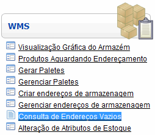
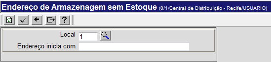
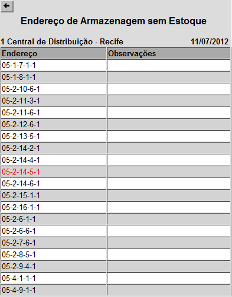

Consulta de Endereços Vazios [ Voltar ]Utilize este formulário para consultar todos os endereços de armazenagem que não possuem estoque. Para acessar esta tela, vá ao menu "WMS" na página inicial e clique em "Consulta de Endereços Vazios". 
O sistema abrirá a seguinte tela: 
Para realizar a pesquisa de endereços vazios, informe no campo "Endereço inicia com" o código do módulo onde deseja realizar a pesquisa. O código do local é preenchido automaticamente pelo sistema de acordo com o local onde o usuário se encontra. 
Observação: se o campo "Endereço inicia com" for deixado em branco, a pesquisa abarcará todos os módulos do local e, por causa da grande quantidade dos dados, pode demorar em excesso. Depois de preencher o campo "Endereço inicia com", clique no botão 
Depois da consulta, clique no botão
|
 para gerar a lista dos endereços. Após alguns segundos, a seguinte tela será exibida:
para gerar a lista dos endereços. Após alguns segundos, a seguinte tela será exibida: para retornar à página anterior.
para retornar à página anterior.